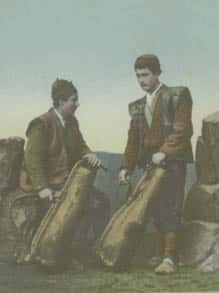

İstanbul’un Azizleri:
Saka-Sucu Esnafı
Saka, çeşme ve sarnıçlardan evlere su taşıyan kimselere verilen addır. Sucu ise su satan veya evlere su taşıyan kimseye denir.
Su tesisatının olmadığı eski İstanbul evlerinde su ihtiyacı mahalle çeşmelerinden karşılanırdı. Mahalle çeşmelerine uzak olan evlerin bu çeşmelerden faydalanması hayli zor oluyordu. Evden çıkıp çeşme başına gidemeyen İstanbullu hanımların evlerine suyun taşınması için bir hizmete ihtiyaç vardı. Bu ihtiyacı uzun zaman “Sakalar Loncası” karşıladı.
XV. yüzyılda kurulan Saka Loncası, evlere para karşılığında su taşıyan kişileri bir araya getirmişti. XIX. yüzyılın sonuna kadar evlere suyu bu loncaya bağlı kişiler taşırdı. Her mahallenin loncaya kayıtlı belirli sayıda sakası bulunurdu. Sakalar sularını çeşmelerden alırdı. Çeşmelerin önlerinde toplanarak buralardan su alacak vatandaşları engellememeleri için hangi sebilden hangi sakaların su alacakları da belirtilmişti. İzin belgesi olmadan su alıp satmak yasaktı.
Sakaların çeşmelerden su almaları gedik sistemine tabi idi. “Saka Gediği” bir imtiyaza bağlı olup, alınır, satılır ve varislere intikal ederdi. Gedik diğer esnaflarda olduğu gibi babadan oğula geçerdi. Saka gedikleri diğer gediklerin kaldırılmasından sonra bir müddet daha devam etmiştir. 1869 tarihinde sakalarla ilgili bir nizamname çıkarılmıştı. İstanbul’da Terkos sularının isalesi, Dersa-adet Su Şirketi’nin kurulması ve II. Abdülhamid’in Kâğıthane Ha-midiye memba sularını borularla Galata, Beyoğlu, Yıldız ve civarına getirtmesi gibi olaylar sonucunda saka gedikleri ve sakalar gözden düşmeye başlamıştır. Ancak saka ve sucular Şehremaneti’ni hep meşgul etmiştir. Bu dönemde halk sakalardan ve gedik usulünden son derece şikâyetçiydi. Sakalar bazı çeşmeleri sanki mülkleri gibi kullanır, buralardan su aldıktan sonra çeşmenin suyunu kesip giderlerdi. Mahalle halkı veya çeşmeyi yaptıran kimseler gediği olmayan bazı çeşmelerin üzerine “Bu çeşmede saka gediği yoktur” ibaresi yazılmış mermer levhalar koyardı.
Önceleri çok önemli bir boşluğu dolduran ve hizmet gören sakalık sistemi zamanın gelişmeleri karşısında yenik düşmüş, kendini yenileyememiştir. Terkos ve Kâğıthane Hamidiye sularının borularla şehrin her noktasına ulaştırılması ile sakalar önemini yitirmiştir.
Saka Meşki
Sakaların içine su koydukları tulum veya kırba gibi kapların teklileri veya çiftlileri vardı. Tekliler sakalar tarafından sırtta taşınır; çiftliler hayvanlara yüklenirdi. Evliya Çelebi’ye göre XVII. yüzyılın ortalarında İstanbul’da 999 çeşme bulunuyor ve buralardan evlere su taşıyan sakalar atlı ve yaya sakalar olarak ikiye ayrılıyordu. Atlı sakaların sayısı 1400, yaya olan arka sakaların sayısı ise 8 bin civarında idi.
Sakaların su taşıdıkları kırbalar köseleden yapılırdı. Kösele altı dört köşe bir tahtanın üzerine demir çemberle tutturulur ve gittikçe daralarak ağız kısmına doğru yükselirdi. Boyu bir metre kadar olan kırbanın içine su doldurulduktan sonra ağzı ikiye bükülür ve bir

meşinle bağlanırdı. Kırbanın omuza asılması için ağızdan dibe kadar inen kösele bir askısı vardı. Bir kırba yaklaşık 45 litre su alırdı.XVII. ve XVIII. yüzyılda arka sakaları bazen kırba yerine ağzı bükülmüş sığır derisinden yapılmış tulumlarla su taşırlardı. XVI. yüzyılda bir kırbanın satış fiyatı 1 akçeydi. XIX. yüzyılda ise bir kırbanın fiyatı suyun taşındığı mesafe de göz önüne alınarak 8 ile 10 para arasındaydı. Sebilcilerin kırbası, sakaların kırbasından biraz farklıydı. Biraz küçük olan sebilci kırbalarının ağız kısmında pirinç bir musluk da bulunurdu. Tüm kırbalar daha önceden belirlenmiş büyüklükte yapılır, su doldurulduktan sonra da ağızları mühürlenirdi.
Atlı sakaların atları çok süslü olurdu. Atın yan tarafındaki saka meşki denilen keçi ve öküz derisinden yapılan tulumlara sularını doldurur, atın kuyruğuna doğru uzun bir hortum kırbanın ağzına bağlar ve ucuna da musluk takarlardı. At, eşek ve katırla su taşıyan sakaların kırbaları ise hepsinden daha büyük ve kapaklıydı. Çoğunlukla iki kırba taşıyan atlı sakalar kimi zaman bu kırba adedini çoğaltarak evlerden çok lokanta ve kahve gibi yerlere su taşırdı.
Sakaların ortak bir giysisi olmamakla birlikte çoğunlukla benzer şekilde giyinirlerdi. Hemen hemen tümünde giysilerini sudan, bedenlerini de nemden koruyan kolsuz uzun bir yelek bulunurdu. Ayrıca kısa şalvar giyip, yazma bağlı fes kullanırlardı.
Sebilci sakalar kırbaları sırtlarında, necef tas ve kâseleri ile “sebil, sebil içene rahmet, sebil sebil” diye bağırarak su dağıtırlardı. Bunların bazıları Kur’an’dan “ve sekâhum rabbuhum şarâben tahûrâ” gibi ayetleri okuyarak ya da sadece “saka” diye bağırarak dolaşırlardı. Ermeni sakalar “Var mı su!” diye bağırırken, Rumlar “Ciro nero” diye bağırırlardı. Yeniçerin sakaları ise kuyruklarını ve yelelerini kınaladıkları çıngırak takılmış atlarla dolaşır, beyaz sorguçlar ve siyah çizmeleri ile “Sebilullah, şehidân-ı teşt-i kerbelâ ervahları için sebil” diye seslenerek su dağıtırlardı. Bunlar Yeniçeri Ocağı’nın su ihtiyacını karşılar, orduya ve hacı adaylarına su yetiştirirlerdi.
Evliya Çelebi, pirleri Selman-ı Kûf olan bu sakaların sayısının 700 olduğunu belirtir. Divan-ı Hümayun’un toplantı günlerinde hizmet eden saray sakaları yazın buzlu şerbet, kışın ise macun sunmakla görevliydiler. Padişah susadığında, kilercibaşına haber yetiştirilir, su bizzat kilercibaşı tarafından altın veya porselen bir kap içerisinde süslü bir tepsi ile getirilirdi. Senede bir kere meşklerini ve musluklarını tamir ettiren saray sakaları Ayasofya Camii’nin şekerci kapısı denilen kapısının karşısındaki Sakalar Çeşmesi’nin yanında bulunurlardı.
Sadece sevap kazanmak maksadıyla atlı ve yaya olarak su dağıtan bu sakalar, ellerinde pirinçten bir tas ve sırtlarında üzeri ayetlerle işlenmiş deriden su torbaları ile su dağıtırlardı.
Refik Halid Üç Nesil, Üç Hayat adlı yapıtında kırbalardan münasebetsiz kap olarak şu şekilde söz eder: “Kırba artık büsbütün unutulmuş, istimalden kalkmış münasebetsiz bir kaptır. Simsiyah, sırılsıklam bir tulumdu. Yine bu derinin uzanmış kısmından teşekkül eden dar bir ağzı vardı. Saka onu sırtına vurur, fakat rutubet ciğerlerine geçmesin diye de yine deriden bir yelek giymeyi ihmal etmezdi. Çeşmeye yanaştı mı, kırbanın ağzını musluğa yanaştırır, doldurur, sonra bu ağzı kıvırır, bıngıl bıngıl şişmiş olan tulumunun, yani kırbanın üst kısmına, su hizasının yukarısına bir iple takardı. Kırba, sevimsiz, hatta içi çıkarılmamış bir işkembeye benzemek itibariyle çirkin bir şeydi ama hem doldurma, hem boşaltma cihetinden pek pratikti; sırttan indirmeye, elde taşımaya, başkasının yardımına lüzum bırakmazdı. Saka, eve girince küpün kapağını kaldırır, kırbanın ağzını çevirdi mi su, kısa bir müddet zarfında lok lok bu deri kaptan toprak kaba nakl-i mekân ediverirdi. Ondan sonra tebeşirle kapı pervazına çizgi (kertme) çekmekten başka iş kalmazdı.”
İstanbul’da evlere su taşıyan bütün sakalar, sütçüler ve ekmekçiler gibi çetele ve kertme yöntemi ile su satarlardı. Her su satışlarında evlerin kapılarına attıkları kertmeleri ay sonunda toplar ve ücretlerini bu kertme sayısına göre alırlardı. Sakaların bir görevi de İstanbul yangınlarında su taşımaktı. Her saka bağlı bulunduğu çeşmeden yangın yerine su taşımakla görevliydi.
Osmanlı sarayındaki sakalar sularını gümüş kaplar içerisinde taşıdıkları için “Sakayân-ı sim-i hassâ” adını almaktalardı. Bu tabir saray sakaları hakkında kullanılırdı. Sarayın mutfağına lazım olan suyu taşıyan sakalar için ise “Sakayân-ı matbah-ı âmire” tabiri kullanılırdı. Bu sakalar sakabaşına bağlıydılar. Sakabaşılar I. Mahmud dönemine kadar baltacılar arasından seçilirken, bu dönemden sonra hasekiler arasından seçilmeye başlandı.
20. yüzyılın başlarında İstanbul’un içme suyu azalıp kıymete binince, sakalar ve özellikle sebilci sakalar suyun ticaretini yapmaya başlamışlardır. Artık İstanbul sokaklarında seyyar su satıcıları çoğalmıştı. Loncaların ortadan kalkmasıyla atlı ve yaya sakalar da değişime uğramış, bunlar da bağımsız su satmaya başlamıştır. Kırbaların yerini yağ ve gaz, sonra da su taşımak için yapılan ağzı mühürlü tenekelerin, damacanaların ve son olarak da pet şişelerin almasıyla belleklerde kalan saka ve sucuların silüetleri silinmeye başlamıştır.
Sakalarla ilgili değişik tabirler ve deyimler bulunur. Bunlardan bazılarını burada karşılıklarıyla ifade edelim:
Saka Deliği: Eski İstanbul ve Osmanlı evlerinde sokak yönündeki duvarda yer alan deliğe denirdi. Sakalar-sucular çeşme ve membadan getirdikleri suyu, evin içine girmeden bu delikten duvarın ardındaki kaba boşaltırdı.
Sakabaşı: Sakaların bağlı olduğu kişidir. Ayrıca sakalar kethüdası da bulunurdu. Sakalar kethüdası, sakalar ocağının kâhyasıdır.
Saka Postu: Bektaşi ve Mevlevi tekkelerinde matbah kapısının yanında bulunan ve tekkede sakalık yapanlara ayrılmış olan yere verilen addır.
Saka Gediği: Osmanlı’da çeşmelerden su alma ayrıcalığına-imtiyazına verilen addır. Bu gedik senede bağlıydı; alınır, satılır ve mirasçılara geçerdi. Bütün tekeller kaldırıldıktan sonra da bu tekel bir süre devam etti. 1869 yılında yayımlanan talimat şeklindeki bir tüzükle saka tekeli yeni esaslara bağlanmıştır. Bu tüzükle su konusundaki tekel genellikle kaldırıldı, ancak çeşmeler için verilen imtiyazlara dokunulmadı. Alım satım şartları yeniden düzenlendi. Mirasçı bırakmadan ölenlerin tekelleri başkasına verilmedi. Bu alınan tedbirler neticesinde ve İstanbul’a çeşitli yerlerden getirilen sular (Dersaadet Su Şirketi’nin Terkos’tan ve Kâğıthane Hamidiye suyunun vb.) ve çeşme suyu üzerindeki bütün tekeller zamanla ortadan kalkmıştır.
İstanbul’da sakalar-sucular bazı semtlerde 1950’li yılların sonuna kadar hizmet vermeye devam etmiştir. Bugün İstanbul’un saka ve sucu esnafından eser kalmamıştır. 1990’lı yıllarda İstanbul’un içme suyu problemi had safhaya ulaşınca kentin yakın semtlerinden ve yakın illerden getirilen kaynak suları pet şişe ve damacanalarla satılmaya başlanmıştır. Bugün her mahallede ve sokak aralarında damacanalarla su satan dükkânlar ve oralarda çalışan personeller günümüzün modern sakaları sayılabilir.